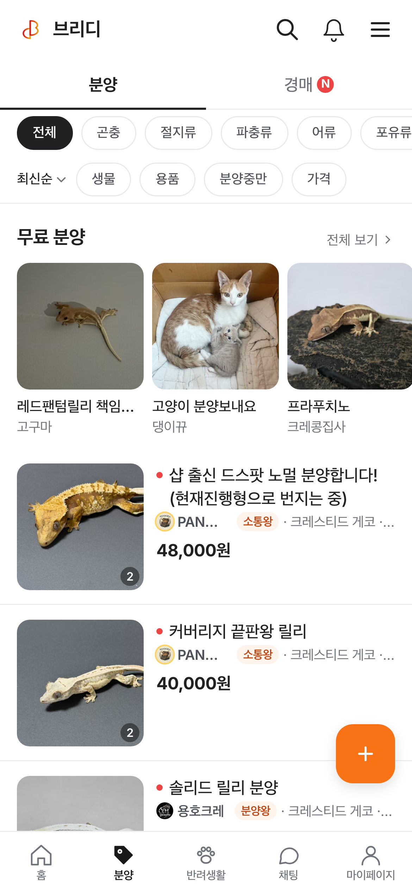
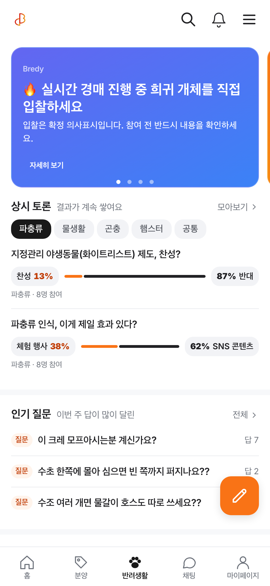
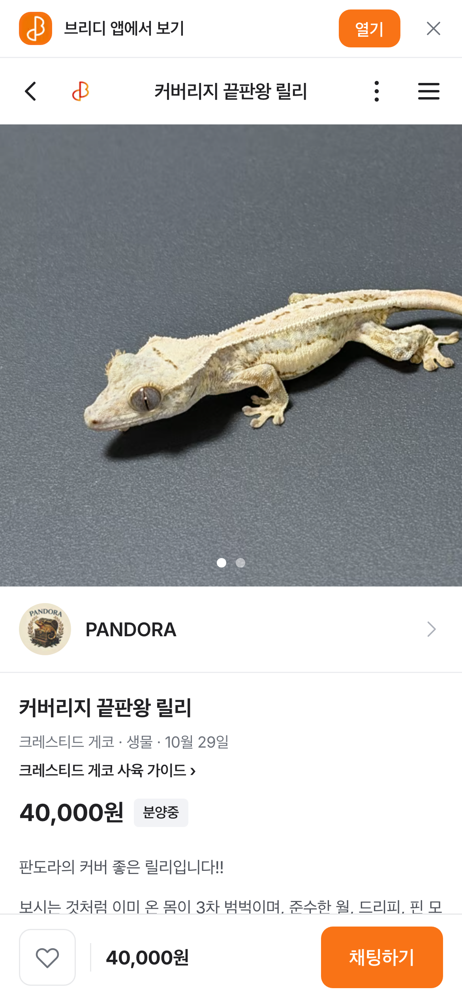

PORTFOLIO · 2026
윤성준
프로덕트 개발자 · 프론트엔드 5년차
뭘 만들기 전에 이게 진짜 본질인지, 핵심인지부터 생각하는 편입니다.
결국 돈이 될지를 많이 봅니다. 돈이 된다는 게 저한테는 사용자가 좋아할지, 그리고 길게 봤을 때 회사에 유리한지입니다.
같은 일은 두 번 하기 전에 자동화부터 생각합니다. 일이라서 그런 건 아니고 원래 그렇게 생겨 먹었습니다.
회사에선 AI 계약 서비스를 만들고, 퇴근하고는 브리디랑 언니노트를 혼자 굴립니다.
121명브리디 출시 주 가입
전주 57명 → 2배
636명브리디 출시 주 방문
하루 11명에서 시작
9개 언어언니노트 기사 자동 발행
많은 날 하루 121건
80배Cue AI 에이전트 주간 사용자
8월 말 → 10월
프로젝트
BHSN · CueAI 계약 앱과 법률 에이전트. 회사 사정으로 직접 문제 찾고 기획·디자인·개발까지 · 2025.06 ~
브리디곤충·파충류·물고기 분양 커뮤니티. 웹·iOS·안드로이드, 기획부터 서버·마케팅까지 혼자
언니노트9개 언어 K-컬처 미디어. 화제 수집부터 기사 발행까지 AI가 돌림
플링오디오·웹소설 다국어 웹앱 · 센슈얼모먼트 2022 ~ 2023
쓰는 것
React · Next.js · React Native(Expo) · SvelteKit · TypeScript · Prisma · PostgreSQL · PostHog · Sentry · Playwright · GitHub Actions · Claude Code · Codex · Gemini
윤성준1 / 8
BHSN · 2025.06 ~
기획을 기다리지 않게 됐습니다
회사 사정으로 일하는 방식이 확 바뀌었습니다. 위에서 기획이 내려오길 기다릴 수 없어서, 문제를 직접 찾고 기획·디자인·개발까지 하고 있습니다.
1 모으기노션·지라·컨플·PostHog·코드를 긁어 '시냅스'로 정리
2 찾기클로드랑 가입·매출 늘릴 지점 찾기
3 PRD문제, 화면, 지표까지 문서로
4 먼저 만들기임시 API로 화면 만들고 녹화해서 공유
5 합의·배포백엔드가 진짜 API로, QA 후 배포
6 다시 보기PostHog로 숫자 보고 또 고침
3.6배Cue 월 가입 (8월 → 10월)
7배Cue 주간 활성 사용자 (8월 중순 → 10월 셋째 주)
0 → 79%가입 중 유입 채널이 보이는 비율 (UTM 연결 후)
PostHog 원본 기준, 내부·테스트 계정 포함. 같은 기간에 광고·시즌 영향도 있어서 전부 제 덕이라고는 못 합니다.
매일 아침 매출 브리핑
매출이 제일 급했는데, 누가 언제 몇 명 들어오고 어디서 나가는지, 결제를 왜 안 하는지 제대로 아는 사람이 없었습니다.
PostHog 데이터를 클로드한테 보여 주고 어디가 문제고 뭘 고치면 될지 가설까지 세우게 해서 매일 아침 회사 공통 채널에 올렸습니다. 숫자만 올리면 아무도 안 읽어서요.
광고비가 어디로 가는지
키워드 광고에 매달 큰돈을 쓰는데 그게 가입으로 이어지는지 아무도 몰랐습니다. 보니까 가입 API에 유입값이 아예 안 넘어가고 있었습니다.
UTM·GTM 붙이고 광고 유입부터 가입 완료까지 한 줄로 연결해서 마케팅 채널에 따로 브리핑하게 했습니다. 지금은 가입마다 구글인지 네이버인지 보입니다.
팀 데일리 브리핑
매일 아침 클로드 루틴이 지라, 컨플, 슬랙을 뒤져서 팀원별로 지금 뭐 하는지, 어디서 막혔는지 정리해 올립니다. 회의 전에 막힌 데가 먼저 보입니다. 이렇게 만든 도구들은 회사 공용 스킬로 배포해서 다 같이 씁니다.
마케터분한테 먼저 말 걸기
회사에 마케팅 전문 인력이 없었는데, 새로 오신 마케터분이 AI도 잘 쓰시고 의욕도 넘쳐 보였습니다. "예전에 마케팅 회사도 다녔었는데, 주로 어떤 마케팅 하세요?" 하고 먼저 말을 걸었고, 브리디에서 SNS·DM 영업 자동화한 얘기를 했습니다. 지금은 AI 자동화랑 데이터 뽑는 걸 같이 하고 있습니다.
Cue 홈 · 계약서 검토로 이끄는 카드와 홈 브리핑, 오른쪽은 AI 법률 에이전트
BHSN · 일하는 방식2 / 8
BHSN · 기반 만들기
팀이 덜 묻고 덜 고치게
사람이 반복하던 일은 도구로 바꾸고, 이상한 건 추측하지 않고 실제 데이터를 열어 봅니다.
다국어, 혼자 다 했습니다
Cue는 화면마다 한글이 박혀 있었고 번역 키 이름도 사람마다 달랐습니다. 키 이름은 파일 경로를 따라 짓기로 정하고, 번역하는 분이 구글 시트만 채우면 GitHub Action이 한·영·일 파일을 만들어 코드에 넣게 했습니다. 개발자가 번역 파일을 손으로 고칠 일이 없어졌습니다.
옮길 땐 큰 화면 30개만 직접 하고 나머지는 에이전트 여러 개에 나눠 맡긴 뒤 검토했습니다. 새 문구가 생기면 시트에 그대로 붙여 넣을 형식으로 뽑아 주는 스킬도 만들어 뒀습니다.
951개옮긴 번역 키
139개파일
3개 언어한국어 · 영어 · 일본어, 시트만 채우면 자동 반영
스크린샷을 믿을 수가 없었습니다
화면 고치고 로컬에서 캡처를 PR에 붙이는데, 로그인이 풀린 화면이나 덜 그려진 화면이 자꾸 찍혔습니다. 테스트 계정으로 로그인 폼을 직접 통과하고, 화면이 다 그려질 때까지 기다렸다 찍는 검증 도구를 만들어 레포에 넣었습니다. 프리뷰 배포가 정말 그 커밋으로 떴는지도 커밋 해시로 확인합니다.
회사 공용 스킬
신규 입사자가 명령 하나로 Jira·GitHub 연동까지 끝내는 셋업, 티켓부터 브랜치·PR까지 같은 모양으로 남기는 Jira 스킬, 기획서·피그마에서 빠진 요구사항을 담당자별 질문지로 뽑는 킥오프 스킬을 만들어 배포했습니다. 리뷰 때마다 나오던 지적은 규칙 파일에 넣어서 AI가 처음부터 안 하게 했습니다.
이상하면 직접 찍어 봅니다
- 구글 드라이브에서 hwpx만 안 보였는데, 추측으로 세 번 고쳐도 안 돼서 드라이브 API로 직접 찍어 보니 zip으로 저장되고 있었습니다
- 스웨거랑 실제 응답이 달라서 검토 끝난 문서가 '검토 전'으로 보였습니다. 백엔드랑 기준 다시 맞췄습니다
근거 들고 얘기하기
- 목록 검색창이 상단 헤더에 있어서 전체 검색처럼 보였습니다. NN/g 리서치랑 기존 제품 사례 들고 디자이너랑 얘기해서 목록 위로 내렸습니다
- "저장할 때마다 계약서가 새로 생긴다"는 버그 신고는 기획서 거슬러 보니 기획의 빈칸이었습니다. 코드 대신 질문으로 넘겼습니다
BHSN · 기반 만들기3 / 8
BHSN · Cue
Cue에서 만든 것
통합 로그인 화면 · one.allibee.ai
두 서비스 로그인 통합
앨리비랑 Cue는 가입도 약관도 따로였습니다. 가입하고 돌아오면 토큰이 만료돼 있거나 워크스페이스가 두 개 생기기도 했습니다.
구글 로그인까지 합치느라 꽤 고생했습니다. 처음 그림대로면 프론트가 서버 두 개를 동시에 봐야 했는데, 백엔드랑 상의해서 서버 투 서버로 양쪽 로그인을 처리하게 했습니다.
대화형 AI 에이전트
대화를 백엔드로 보내면 백엔드가 AI 허브에 요청해서 응답을 받아 오고, 응답 형식에 따라 미리 정해 둔 워크플로우를 추천하거나 바로 실행하고, 거기 맞는 화면을 그립니다.
처음엔 SSE로 바로 스트리밍했고, 나중에 백그라운드 방식으로 바꿨습니다. 주간 대화 요청이 8월 말보다 29배쯤 늘었습니다.
퍼널 개선
계약서 작성 → 검토 → 전자서명 → 체결로 가는 서비스인데, 어디서 멈추는지는 감으로만 얘기하고 있었습니다.
단계마다 이벤트를 심고, 단계 사이마다 다음으로 넘어가게 돕는 화면을 넣었습니다. 숫자 보고 거의 안 쓰이던 메뉴는 정리했습니다.
계약서 버전 비교 · 삼성SDS
삼성SDS 법무관리시스템 요구사항이었습니다. 형식이 다른 계약서 두 개를 OCR로 텍스트로 바꾸고, 구글 텍스트 비교 라이브러리(diff-match-patch)로 차이랑 위치를 뽑았습니다.
HTML 뷰어에 바뀐 곳을 하이라이트하고 번호 매기고 수정·삭제·추가를 태그로 나눴습니다. 나중엔 코어 제품이랑 라이트 버전에도 들어갔습니다.
29배에이전트 주간 대화 요청 (8월 말 → 10월 셋째 주)
80배에이전트 주간 사용자
94%요청 대비 응답 완료 (10월 셋째 주)
PostHog 원본 기준, 내부·테스트 계정 포함. 8월 말은 계측을 막 붙인 때라 출발점이 낮습니다.
BHSN · Cue4 / 8
BREDY · 1인 개발 · 운영
브리디
곤충·파충류·물고기 키우는 사람들이 기록하고 분양하고 경매하는 서비스입니다. 기획, 디자인, 웹, 서버, 앱, 마케팅까지 혼자 합니다.
121명출시 주 가입 (10/20~26)
전주 57명
636명출시 주 방문
전주 453명
150건출시 주 앱 설치
전주 30건
100/100창립 브리더 자리
출시 전에 마감



출시 전에 브리더들한테 직접 연락했습니다
첫 분양자 모으려고 인스타 DM이랑 생물 카페로 브리더, 샵에 직접 연락했습니다. 얘기 들어 보니 결국 "이 사람 믿어도 되나"가 제일 컸습니다.
그래서 올린 사람이랑 거래 완료 수를 보이게 하고, 후기는 분양자가 지정한 입양자만 쓰게 했습니다. 수수료가 걸린다길래 평생 경매 수수료 0원 창립 브리더 100자리를 열었는데 출시 전에 찼습니다.
'상품'이라는 말이 싫다고 했습니다
'상품', '판매'라고 써 놨더니 동물이 물건 같다는 반응이 많았습니다. 화면 문구는 전부 '분양', '입양'으로 바꾸고 DB는 그대로 뒀습니다.
카카오 로그인 때 프로필 사진이 강제로 들어가는 게 싫다는 말도 있어서 기본 이미지로 바꿨습니다.
SNS · 최근 30일 (9/29 ~ 10/28)
6.9만스레드 조회수
반응 1,621 · 팔로워 189
2.5만인스타 조회수
본 사람 4,219명
1,748인스타 프로필 방문
링크 누름 184
882명인스타 팔로워
반응 876
스레드는 혼잣말 같은 글이 잘 먹혀서 "파충류 입문 고민", "개발 때려치우고 농사나" 같은 글이 3~4천씩 나왔습니다. 인스타는 릴스가 조회의 절반 정도입니다.
브리디5 / 8
BREDY · 숫자 보고 고치기 · 자동화
혼자서 팀처럼 굴리기
제가 봐도 안 쓰고 싶었습니다
PostHog로 재 보니 홈에 온 사람 중 글을 연 사람 28%, 반응 남긴 사람 8%, 일주일 안에 다시 온 사람 19%였습니다. 첫 화면이 순위만 있고 동물 사진은 맨 아래였습니다.
사진 피드를 위로 올리고 분양·경매를 한 탭으로 합쳤고, 바꾸기 전에 목표 숫자부터 정해 뒀습니다.
로그가 없는데 등록이 안 된다고
"혈통 등록이 안 돼요" 제보가 왔는데 서버 로그는 1시간만 남아서 이미 없었습니다. PostHog 클릭 기록을 사람별로 이어 보고 폰 높이로 재현해 보니, 오류 문구가 하단 버튼에 가려 화면 밖에 떠 있었습니다. 그날 고쳐서 배포했습니다.
SEO · AEO
페이지 742개를 사이트맵에 올리고 서버 HTML에 요약을 넣어 검색엔진이랑 AI가 읽기 좋게 했습니다. SNS랑 같이 매일 손보면서 하루 방문자가 11명(10/6)에서 닷새 만에 115명이 됐습니다.
매일 19개 일정이 알아서 돕니다
- 개발 · 배포 웹 CI/CD, 앱 코드푸시, 앱스토어·플레이스토어 제출까지 명령어 하나
- 기획 기획서랑 피그마에서 빠진 요구사항 찾기, PRD랑 검증 기준 같이 쓰기
- 지표 매일 아침 PostHog 브리핑 보고 그날 고칠 것 정하기
- 디자인 · 영상 분양·경매 홍보 카드 자동 생성, 새벽마다 그날 밈으로 숏폼 만들어서(Gemini Veo) 릴스·쇼츠·틱톡에 올리기
- 영업 · 마케팅 인스타 DM 영업, 생물 카페 댓글이랑 블로그, 인스타·스레드·X 게시
- 사고 방지 에이전트가 DB 날린 사고 겪고 나서 위험한 명령은 훅으로 막아 둠
서버: Next.js API · Prisma · PostgreSQL / 앱: Expo · FCM / 웹 Push · Sentry · Playwright E2E
브리디6 / 8
UNNIE NOTE · K-컬처 미디어
언니노트
한국 연예·뷰티·여행 소식을 9개 언어로 냅니다. 네이버 엔터 랭킹, 네이트판 같은 데서 화제를 모으고, AI가 언어별 기사로 만들어 올립니다. 사람 손은 거의 안 갑니다.
665명계측 첫 주 방문 (10/19~25)
57%그중 검색 유입
121건많은 날 하루 기사
13명ChatGPT에서 넘어온 주간 방문
전주 1명
unnienote.app
어떻게 도나
GitHub Actions가 2시간마다 화제를 모으고, 규칙이랑 인물 사전으로 점수를 매깁니다. 고른 주제는 Claude 한 번 호출로 여러 언어 기사를 쓰고 사진을 붙여 발행합니다. 돈 많이 드는 AI 채점은 일부러 뺐습니다.
대만에서 일본으로 바꿨습니다
처음엔 대만을 1순위로 잡았습니다. 그런데 숫자를 보니 일본어로 들어오는 사람이 제일 많았고(10/22~28 일본어 110명, 영어 99명, 번체 79명), 일본 쪽 광고 단가가 더 비쌌습니다.
그래서 타깃을 일본으로 바꾸고, 마케팅도 일본에서 많이 쓰는 스레드·인스타·X 쪽으로 옮겼습니다. 일본어 기사는 구글이랑 야후 재팬에서 꾸준히 들어옵니다.
언니노트7 / 8
PLING · 센슈얼모먼트 · 2022.06 ~ 2023.07
플링
오디오·웹소설 다국어 웹앱이랑 CMS, 백오피스를 만들었습니다. Next.js 버그를 찾아서 이슈로 올렸는데, 다음 버전에서 고쳐졌습니다.
플링 웹
경력
BHSN2025.06 ~ · AI 계약 서비스 앨리비·Cue, 법률 AI 에이전트
핀포인트2023 ~ 2025 · 빌딩 관리 CMS(건물·상품·예약·CS·계약). CS 데이터를 LLM으로 분석하는 기능
센슈얼모먼트2022 ~ 2023 · 플링 오디오·웹소설 플랫폼
올맵2021 · 웹, 하이브리드 앱
더 자세한 건 github.com/ytw418/about-me 에 있습니다.
ytw418@naver.com8 / 8